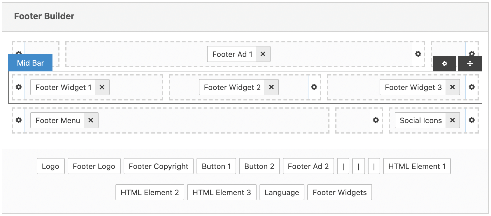
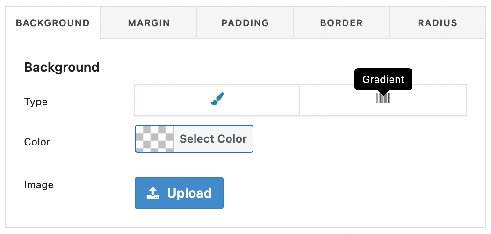

The footer theme area consists of various elements like footer logo, footer menu, or social icons. The theme offers the Footer Builder so you have full control over the footer composition.
Footer Builder
The footer builder allows you to compose any footer layout using an easy and intuitive drag & drop interface.

Quick Start
To start building your footer, please do as follows:
- Open the Newsy → Theme Options → Footer → Footer Builder Option
- Use drag & drop interface to move footer elements between rows
- Click on an element (e.g. Logo) to open its settings panel
- Save changes
Manage Rows
The footer layout is divided into 3 rows (labeled as top, mid, bottom). Every row has 3 cells (left, middle, right).
- To reposition rows, mouse hover to rows.
- To change row/cell properties, click the icon.
- To move a row, just drag & drop it.
Manage Cells
The footer layout rows has 3 cells (left, middle, right).
- Align: place items to left, center, right.
- Display: Grow is force cell size wide. Normal cell is takes items size.
Footer Presets
The builder offers a few pre-made footer compositions for a quick start. Please do as follows to start working from a pre-defined layout:
- Open the Newsy → Theme Options → Footer → Footer Presets.
- Click one of the available Compositions.
- Adjust your footer.
- Save changes
Footer Style
The footer layout is divided into 3 rows (labeled as top, mid, bottom). Set style and height for each bar in here.
- Footer Wrap Style
-
Footer Background Color
Select footer wrapper color. This will set background color for all footer bars. -
Footer Background Image
Select footer wrapper background image. This will set background image for all footer bars.
- Top Bar
-
Row Style
Base css style for the row. You can add specific colors and spaces for row.  -
Row Height
Set height size of top bar height.
- Mid Bar
-
Row Style
Base css style for the row. You can add specific colors and spaces for row. -
Row Height
Set height size of mid bar height.
- Bottom Bar
-
Row Style
Base css style for the row. You can add specific colors and spaces for row. -
Row Height
Set height size of bottom bar height.
Footer Elements
All available builder elements are listed below. Some elements require setup. Please refer to their configuration pages before using it inside the builder.
Footer: Logo
By default the theme displays the site title in the Footer Theme Area. You can easily change it and display the logo image.
-
Logo Type
Choose logo type. Text or Image.
Text Logo
-
Text Logo
Set site name here for logo text.
-
Text Logo Typography
Set typography for logo text.
Image Logo
-
Logo Image
Upload an image as logo. -
Logo 2x Image
Upload a retina image as retina logo. -
Logo Dark Image
Upload an image as logo for dark scheme.
-
Logo Dark 2x Image
Upload a retina image as retina logo for dark scheme.
-
Text Logo
Footer: Menu
In this part, you can setup several options for footer menu.
-
Footer Menu Style
Choose style of footer menu.
Footer: Social Icons
In this part, you can setup several options for footer social icons.
-
Select Social Icons
Choose social icons. -
Social Icons Style
Choose social icon style. -
Social Icons Background Color
Set icon background color. - Social Icons Color
Set icon color.
Footer: Copyright
In this part, you can setup several options for footer copyright.
-
Copyright Text
Enter the copy right text of footer. You can use following pattern to make replace them with real data:
#year#: Will replace with current year, ex: 2015.
#date#: Will replace with current year, ex: 2015.
#sitename#: Will replace with site title.
#title#: Will replace with site title.
#siteurl#: Will replace with site homepage url.
Footer: Buttons
In this part, you can setup several options for button element.
Button 1-2
- Button Text
Insert button text. -
Button Icon
Insert font icon for button. - Button Link
Insert button url link. - Button Style
Set button style. -
Background Color
Set background color for the button. -
Background Hover Color
Set background hover color for the button. -
Text Color
Set text color for the button. -
Text hover Color
Set text hover color for the button. -
Border Color
Set border color for the button. -
Border Hover Color
Set border hover color for the button.
Footer: Ads
In this part, you can setup several options for Footer Ads element.
- Ad 1
Select ad element. - Ad 2
Select ad element.
Footer: Html Elements
In this part, you can setup several options for HTML element.
-
HTML Element 1
Insert html or shortcode element. -
HTML Element 2
Insert html or shortcode element. -
HTML Element 3
Insert html or shortcode element.
Footer: Widgets
Newsy comes with 3 pre-defined widget areas that you can use to decorate your footer. Here’s the list of pre-defined widget areas : Footer - Column 1, Footer - Column 2 and Footer - Column 3. Footer Widgets element will be use all in single row. Footer Widget 1-2-3 elements will use them separately in footer area.